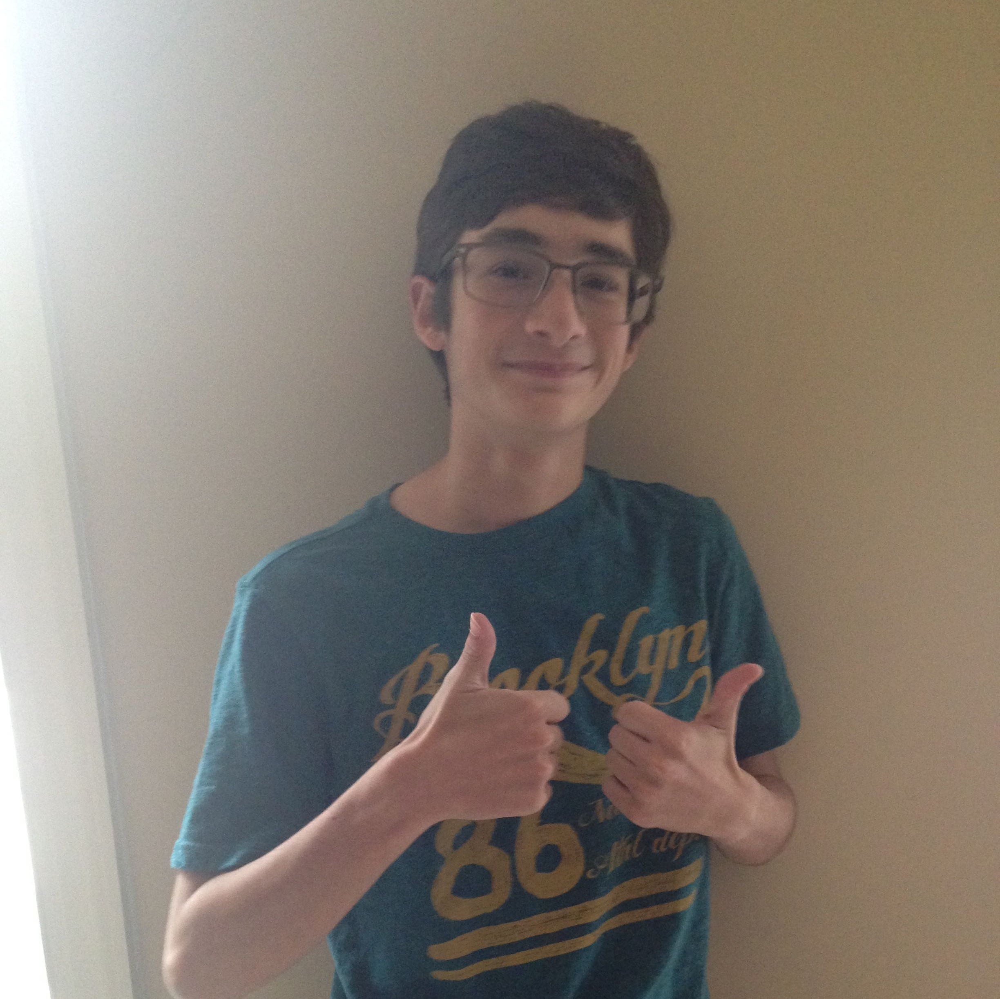
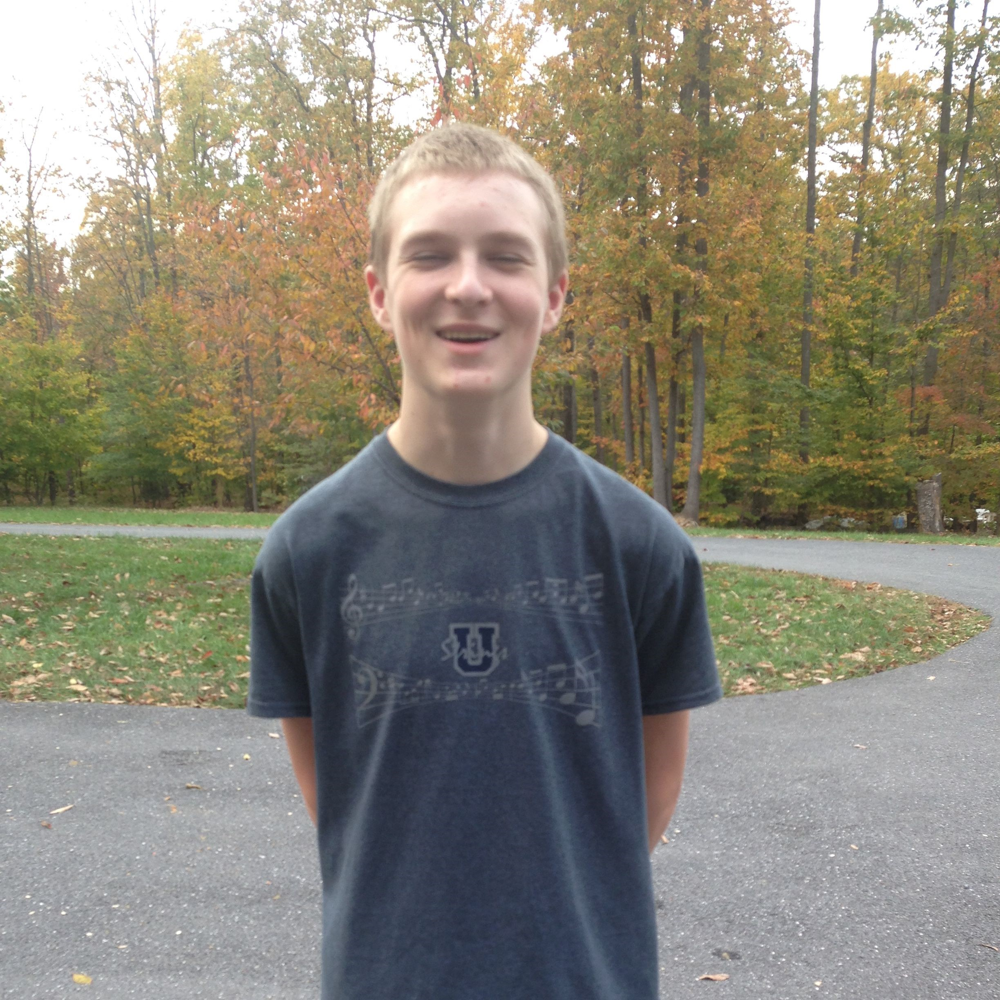
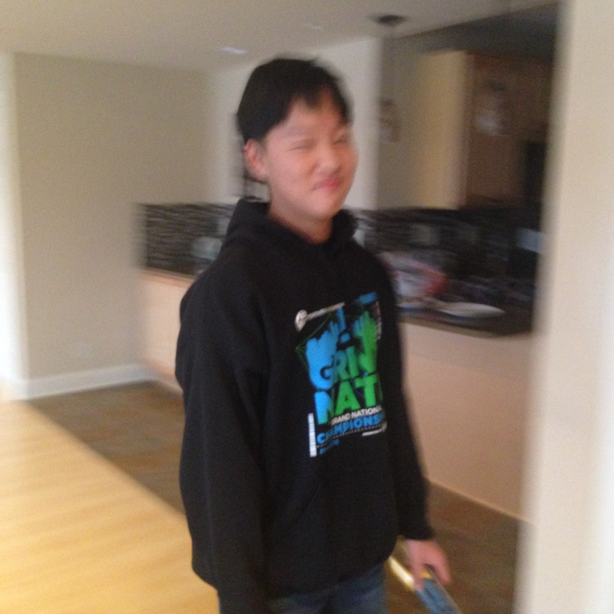
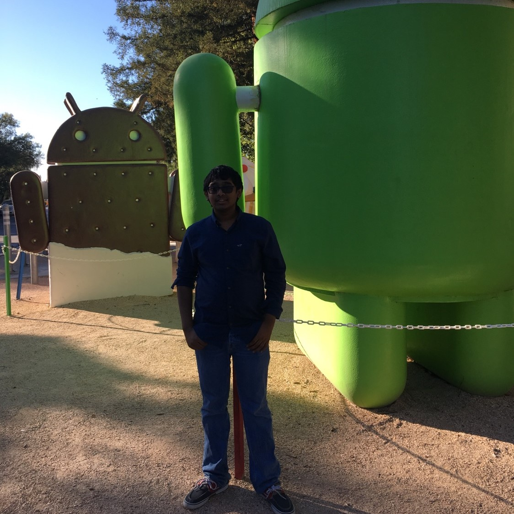

I’m Simon Mahns, I'm a 18 year old Senior at Urbana High School. I am captain of the Urbana Science Olympiad, the President and founder of the National Technical Society chapter, the Vice president of the National Honor Socety at Urbana, and the Vice president of the Urbana Programming club. I also am part of Urbana High school’s Cross Country team, wrestling team, and Outdoor track team. I am the captain of The Mandelbots and its founder. I am also the Presidet and founder of "Omnified Resources of Innovataion and Cognition", an international nonprofit that funds the team. I foudned the Mandelbots because I love of robotics. It is something I have always loved from a young age. I have participated in FLL three times and in my third and final season of FLL, my team (that I founded) placed at the world festival. I also have participated in multiple seasons of VEX. This will be my first year of FTC; I started a team in Anchorage, Alaska, my hometown, but I moved to Maryland right as we started building the robot so I was not able to compete (the team “fire Island Robotics” got to Super-regionals). I intend to follow a career path in either aerospace engeering. I want to change the world.
Hello, my name is Jude and I am a 15 year old Sophmore at Urbana High School. I am part of the school’s Academic Team, Red Cross, Interact (Rotary), and the Speech/Debate Club. I am the captain of outreach and the team's main photographer. I joined the club because I have a passion for learning computer programming languages and skills, other STEM-oriented activities, and I participated in a FIRST Lego League (FLL) tournament in 2015. I would like to become a Computer Forensic Engineer. I also have an interest in civil aviation.
I’m Nick Pinto, aged 16 years old in my junior year. Other than robotics, I’m involved in Science Olympiad. I play the piano and violin with about 10 and 4 years of experience, respectively. On the robotics team, I help with programming and the general strategy. I’m most interested in the physics side of the competition as I’m hoping to major in physics once I reach professional studies. I have competed in the First Tech Challenge once before, in Seventh Grade. I hope to place very well this year and I believe with innovative solutions and ingenuity, our team can soar above the rest.
My name is Viktor Murray, I'm a junior at Urbana High School. I play cello in my school’s orchestra, and I am section leader in the Frederick Regional Youth Orchestra. I'm interested in robotics because it lets me use my problem solving skills to create solutions for various challenges. I was on the middle school FTC team for one year during the 2013-14 season, so I hope that this team has better success than the middle school team did. In the future I plan on getting a degree in computer engineering and becoming a computer hardware engineer.
My name is Josh Yu and am in my Junior year at Urbana High School. I’ve competed in the FTC robotics league for two years and the FLL league for 1 year, where my team, Brickstorm, placed in regional competition. I now joined the Mandelbots seeking redemption for an abysmal year of FTC Middle School Robotics. Outside of robotics, I’m in Science Olympiad, the marching band, model UN, and National Math Honor society. I have performed with the All-County band for 3 years and the All-State band for 1. I plan to pursue a career in mechanical or electrical engineering
 My name is Haoran Diao, as of 2016 I am a highschool junior. I’m an electronics hobbyist and outside of robotics I am in Debate club. I am the team lead programmer and maintainer of this website. In the future I plan to be an electronics engineer, though would be content with any electronics related job that would allow a roughly middle class standard of living. Richard Matthew Stallman is my spiritual leader.
My name is Haoran Diao, as of 2016 I am a highschool junior. I’m an electronics hobbyist and outside of robotics I am in Debate club. I am the team lead programmer and maintainer of this website. In the future I plan to be an electronics engineer, though would be content with any electronics related job that would allow a roughly middle class standard of living. Richard Matthew Stallman is my spiritual leader.
My name is Ezeki Ganesan. I’ve had robotics experience since the third grade and programming experience since the freshman year. My hobbies beside robotics are percussive arts and gaming.
My name is Ben, I am a 17 year old Senior at Urbana high school. I am great at programming and enjoy emacs. I am a strong advocate for free software as well. I participate as part of the tech crew for events in the Urbana auditorium. I plan to pursue a career in cybersecurity